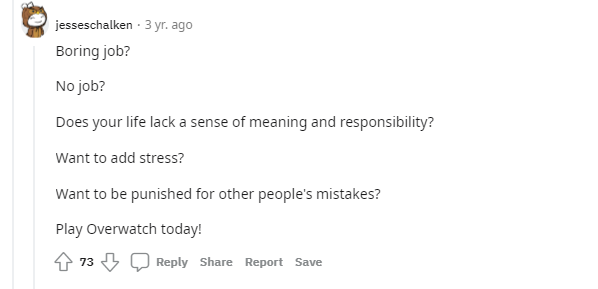
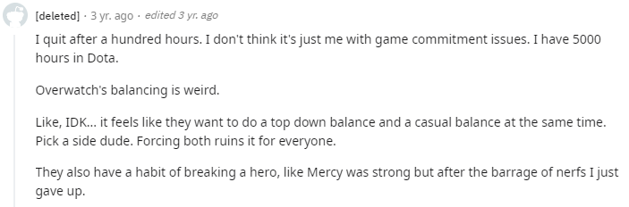

The Death of Overwath

Why did Overwatch die?
One of the biggest contributors to Overwatch dying in 2021 is the lack of content.
Since the announcement of Overwatch 2, the original title has been ignored. Blizzard entertainment
has completely halted the release of new heroes and maps. During its initial years, players used
to get three heroes and maps a year which kept the game feeling fresh. The upcoming sequel to the game
was delayed which means that players are now waiting even longer to get access to new heroes, maps, and game
modes.
What do other fellow gamers think of Overwatch's state?


Most recent graph of Overwatch's popularity